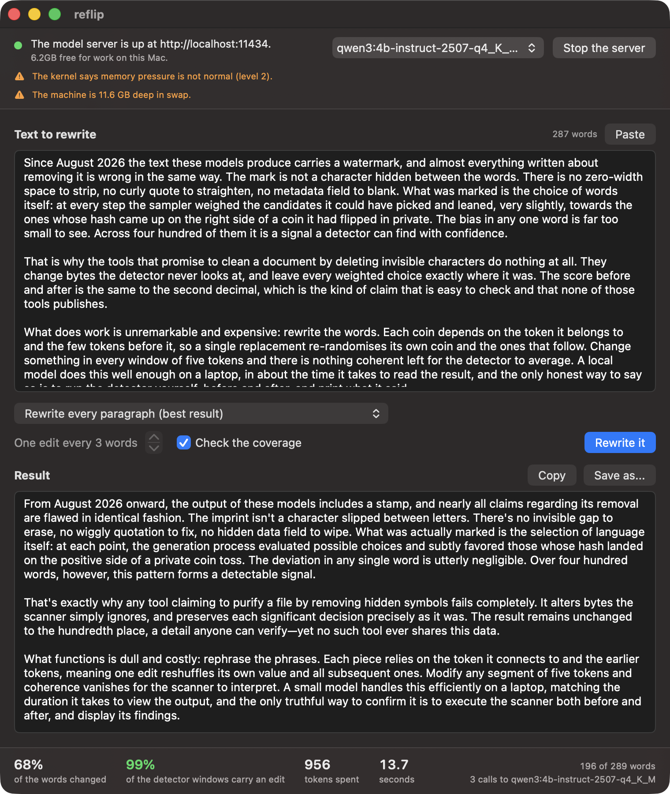

Rewrites watermarked text until the detector reads it as ordinary writing.
Every other tool that claims to remove Claude's watermark deletes invisible characters and stops there. reflip runs the published detector before and after each rewrite and prints the score.
01 / the problem
Every site calling itself a watermark remover leaves the score exactly where it found it: 17.6 before, 17.5 after.
Since 2 August 2026 Claude's text has carried a statistical watermark: a bias in which words the model chose, not a hidden character in the text. The detector recomputes a coin flip for each word from a secret that only Anthropic holds, then checks whether too many of those coins came up heads.
Deleting a zero-width space or straightening a curly quote changes none of those coins, because the coins were never encoded in the characters. That is what most sites calling themselves watermark removers do, and the number above is what it buys: the same score to the second decimal.
02 / why one edit is enough
Change one token, and five coins are thrown again.
Each coin the detector recomputes depends on its token and the four tokens before it. Edit one token, and the coins for that token and the four that follow it become fresh, unbiased flips, because their hash context is no longer the one the original sampler saw.
Cover every window of five consecutive tokens with at least one edit and every coin is re-randomised, whatever the strength of the watermark. That is one edit in five tokens, about one word in three or four. A toy generator with no language model at all shows the same shape: replacing every fifth token brings its score from above 10 down below 4, and replacing every tenth token only halves it.
03 / the numbers
24 watermarked texts, one detector, run before and after nine kinds of edit.
z counts standard deviations above chance: unwatermarked text lands between -2 and +2, and a z above 4 would happen about once in thirty thousand times by accident.
| transform | z before | z after | z below 4 | positions intact | meaning kept | words changed |
|---|---|---|---|---|---|---|
| none | 17.6 | 17.5 | 0 of 24 | 0.99 | 1.000 | 0% |
| unicode strip | 17.6 | 17.5 | 0 of 24 | 0.99 | 1.000 | 0% |
| rules, no model | 17.6 | 15.8 | 0 of 24 | 0.90 | 0.999 | 2% |
| infill, stride 4 | 17.6 | 1.5 | 22 of 24 | 0.11 | 0.972 | 28% |
| infill, stride 3 | 17.6 | 1.5 | 21 of 24 | 0.10 | 0.967 | 40% |
| infill, stride 2 | 17.6 | 1.2 | 22 of 24 | 0.08 | 0.959 | 58% |
| rules, then infill (stride 3) | 17.6 | 1.9 | 20 of 24 | 0.11 | 0.968 | 39% |
| paraphrase | 17.6 | 0.6 | 23 of 24 | 0.04 | 0.956 | 72% |
paraphrase, coverage-checked (default with --tokenizer) | 17.6 | 0.3 | 24 of 24 | 0.03 | 0.955 | 74% |
| unwatermarked controls (23) | 0.0 | -0.1 | 23 of 23 | 0.99 | 1.000 | 0% |
Stripping invisible characters does nothing.
The detector's score does not move: 17.6 before, 17.5 after, the same reading to the second decimal. That is what most sites calling themselves watermark removers do.
Rules without a model do not remove the watermark.
Contractions, spelling variants, dashes and stock phrases change 2% of the words and take about a tenth off the score, from 17.6 to 15.8. Removal needs an edit in every window of five tokens, and rules cannot supply that density.
One edit in every window is enough.
Every rewrite that uses a model re-randomises 90 to 96% of the detector's positions, and the mean score drops from 17.6 to somewhere between 0.6 and 1.9, inside the range of the unwatermarked controls. tests/test_synthid.py shows the same shape with no language model at all.
Slot filling was the clever idea. The plain rewrite beat it.
Infill was built to touch a quarter of the words and spend a fraction of the tokens a full rewrite spends. On this model it touches 28 to 58% of the words, spends two to three times what a paraphrase spends, runs twice as long, and leaves grammar slips the meaning score does not catch. The paraphrase reaches z 0.6 at 5,100 tokens per thousand words in 15 seconds, so paraphrase is the default and infill stays for when keeping most of the original wording matters more than fluency.
04 / the window
One column, top to bottom.
The window runs down in a single column: the model server and a button to start it, a place to paste text, a button that rewrites it, and the result.
The numbers along the bottom of the picture are a real run of the paragraph above them, generated by the application itself rather than staged by hand.

05 / for agents
One command, and a result meant to be read by a program.
reflip rewrite draft.md --json --progress
The result is a single JSON object carrying the transform and model used, the
rewritten text, the share of words changed, the coverage of five-token windows,
and what the call spent in tokens and seconds; with --progress,
JSON Lines arrive on standard error while the work runs, so a caller can show
progress without pulling the result out from between them.
Exit code 0 means done, 1 an expected refusal carrying a reason meant to be shown as written, 2 a usage mistake, and 130 an interrupt.
06 / choosing a model
A catalogue that says what it does not know, and a way to check it yourself.
reflip models --recommended
reflip models --search "gemma 3"
reflip models --measure gemma3:4b
--recommended lists what is worth trying and what each entry is
bad at. --search reaches Hugging Face for anything published as a
GGUF file. --measure settles an argument instead of stating an
opinion: it rewrites watermarked texts from the benchmark corpus with the named
model and reports the detector before and after, the coverage, the words
changed, the seconds and the tokens.
A model that watermarks its own output is refused rather than ranked. That covers Claude models launched since August 2026 and the Gemini service, while open weights run under a local server, such as Gemma's, carry no watermark to begin with.
07 / what this cannot verify
Nobody outside Anthropic can check this against Claude's own detector.
Anthropic's secret is private. So is the context length its detector reads, and so is the detector itself. What runs here is the published SynthID-Text algorithm, at its published settings, against an open model and a secret of its own.
That is the whole limit of what can be shown, and it is worth stating plainly rather than in a footnote: a tool that claims to have checked a removal against Claude's real detector is lying, because that detector is not something anyone outside Anthropic can run. What is verified here is the published method, applied honestly, with the numbers published alongside it.